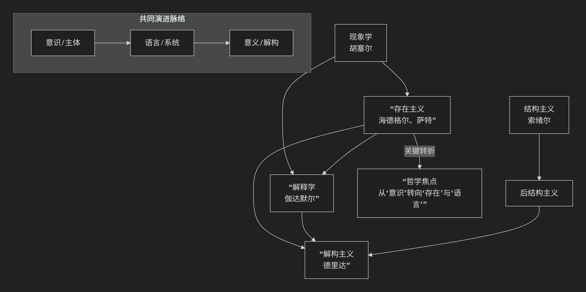
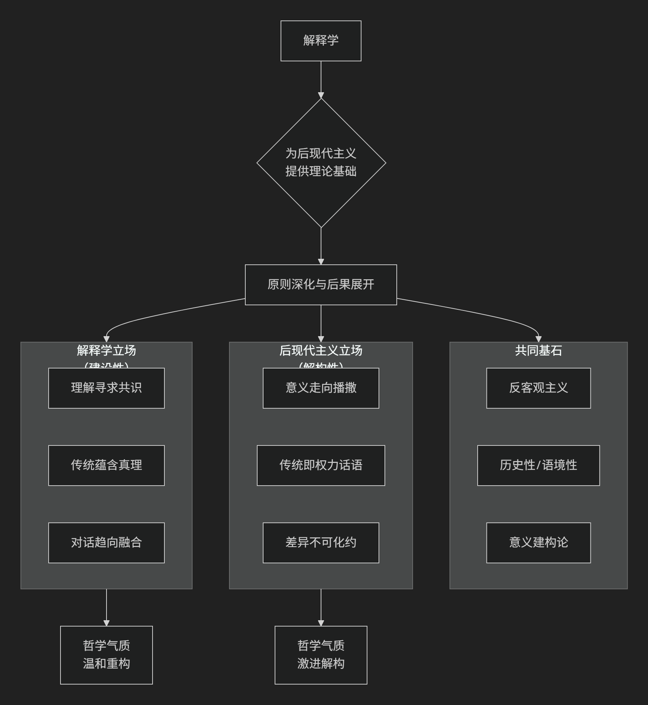

Deepseek
解释学与其它学派
现代欧陆哲学各学派不是孤立发展的，而是存在着深刻的承继、批判与转折关系。它们共同描绘了20世纪欧陆哲学从探究“意识”到探究“语言”再到解构“意义”的演变轨迹。
为了更直观地理解它们错综复杂的关系，下图梳理了各学派的发展脉络与核心思想关联：

核心关系总览
简单来说，这条思想链可以这样概括：
现象学是母体和起点，试图为哲学找到坚实基点。
存在主义是现象学的一次人类学转折，将其应用于人的具体生存。
解释学是现象学和存在主义的融合与发展，将“理解”视为人的基本存在方式。
结构主义是作为反题出现的，它反对前三种思想对“主体”和“意识”的强调，转而关注客观的“结构”和“系统”。
后结构主义/解构主义则又是对结构主义的批判和超越，它吸收了前几家所长，最终将焦点指向语言和意义的无限延异游戏。
下面我们详细展开它们之间的具体关系。
一、现象学：共同的起点与方法论母体
创始人：埃德蒙德·胡塞尔 口号：“回到事物本身！”
现象学可被视为其他学派的共同源头和方法论摇篮。
核心目标：悬置（搁置）关于世界存在的传统信念（“自然态度”），直接描述呈现在我们意识中的现象，从而为知识找到一个绝对可靠的基础。
关键方法：意向性（意识总是关于某物的意识）和本质直观。
与其他学派的关系：
对存在主义：胡塞尔的学生海德格尔将老师的现象学方法从对“纯粹意识”的分析，彻底转向了对“人的存在”（此在）的追问。他问的不是“意识是什么？”，而是“存在的意义是什么？”。这就完成了从现象学到存在主义的转折。
对解释学：海德格尔进一步认为，人对“存在”意义的探究，本身就是一种理解和解释活动。因此，他将现象学发展为解释学的现象学，为后来的伽达默尔开辟了道路。
对结构主义：结构主义在某种意义上是对胡塞尔追求“主体性”和“意义”的反叛。
二、存在主义：现象学的人类学应用与深化
核心人物：海德格尔、萨特、梅洛-庞蒂 核心关切：人的存在、自由、选择、焦虑、死亡。
存在主义可看作是将现象学方法彻底地应用于具体的人类生存境况。
从现象学到存在主义：胡塞尔关心的是普遍的意识结构，而海德格尔和萨特则认为，哲学的起点必须是独特的人类存在——“此在”。他们用现象学方法描述了人被“抛入”世界、面对虚无、不得不自由选择等生存体验。
与解释学的关系：海德格尔的哲学本身就是存在论的解释学。他认为理解不是认识方法，而是此在的存在方式。伽达默尔则继承并发展了这一点，将其系统化为哲学解释学。
与结构主义的对立：存在主义高扬人的主体性、自由和能动性。而结构主义则宣称**“主体已死”**，认为不是人在说话，而是结构在通过人说话。两者在“人”的地位问题上直接对立。
三、结构主义：作为反题的革命
核心人物：索绪尔（语言学）、列维-斯特劳斯（人类学）、拉康（精神分析） 核心观点：“语言/文化/心灵的结构决定了个体的思想和行为。”
结构主义是作为现象学和存在主义的一个强大反题而出现的。
反主体/反人道主义：结构主义认为，现象学和存在主义对“主体”、“意识”、“自由”的强调是一种幻觉。真正的决定力量是隐藏在表象之下的深层、无意识的结构系统（如语言结构、亲属结构、神话结构）。
反历史：结构主义关注共时性 结构（系统在特定时刻的静态关系），而非历时性 演变（历史发展），这与强调历史性的解释学形成对比。
关系：它用“结构决定论”取代了“主体中心论”，彻底改变了人文社会科学的研究范式。
四、解释学：在现象学、存在主义与结构主义之间
核心人物：伽达默尔 核心观点：“理解是此在的基本存在方式。”
解释学巧妙地吸收和融合了现象学、存在主义，并回应了结构主义的挑战。
继承现象学与存在主义：从海德格尔那里继承了“理解”的本体论地位和前结构（前见）。
回应结构主义：伽达默尔承认结构主义揭示的“语言中心性”，但他认为语言不是封闭的结构，而是进行中的、活生生的对话，理解是“视域融合”的事件。他保留了历史性和主体间性，这与结构主义的反历史倾向不同。
五、后结构主义/解构主义：对结构主义的内部爆破
核心人物：德里达、福柯、巴特 核心观点：解构结构的稳定性和确定性，揭示意义的无限延异。
后结构主义是从结构主义内部生发出来的批判者和颠覆者。
与结构主义的关系：它接受结构主义关于“语言重要性”的基本前提，但反对其“结构是稳定、封闭、有中心”的观点。
德里达的解构：认为结构总有一个无法被结构化的“中心”，而这个中心本身是脆弱的。意义不是在二元对立中确定的，而是在无尽的“延异”中被不断推迟和差异化的。
与其他学派的关系：德里达的解构思想深受胡塞尔现象学（对符号的分析）和海德格尔存在论（对“存在”的追问）的影响，但其结论却动摇了它们的基础。
总结：一张动态的思想地图
学派 |
核心关切 |
与它派的关系 |
|---|---|---|
现象学 |
意识与现象 |
母体：为存在主义和解释学提供了方法论。 |
存在主义 |
人的生存与自由 |
应用与转折：将现象学应用于人的具体存在，与结构主义直接对立。 |
解释学 |
理解与意义 |
综合与发展：融合现象学/存在主义，并回应结构主义的语言观。 |
结构主义 |
系统与结构 |
反题：反对前三种学派对“主体”的强调，关注客观结构。 |
后结构主义 |
差异与解构 |
批判与超越：从内部解构结构主义，并颠覆传统的意义和真理观。 |
总而言之，这些学派的关系是一部充满张力的思想戏剧：从现象学的奠基，到存在主义的转向，再到结构主义的反叛，最后到解构主义对一切的颠覆。它们共同推动哲学告别了追求绝对确定性的梦想，进入了一个关注语言、历史、差异和解释的更为复杂、也更为丰富的时代。
解释学与后现代主义
解释学与后现代主义的关系极其密切，可以说，解释学为后现代主义提供了核心的理论工具和哲学基础，而后现代主义则将解释学的原则推向了极端，并将其后果彻底地展现出来。
它们之间的关系不是简单的从属，而是一种深化、激进化和后果展开的关系。
为了更直观地理解两者错综复杂的关系，下图梳理了其核心关联与根本分歧：

一、共同基石：从客观主义走向意义建构论
解释学和后现代主义都猛烈批判了传统哲学中的客观主义和基础主义迷梦。
共同敌人：那种认为存在一个独立于观察者、可以被绝对客观地把握的“真理” 的观念。它们都认为，理解不是主体被动地“反映”客观世界的过程。
共同核心：意义是生成的、建构的，而非被发现的。
解释学的贡献：伽达默尔提出，理解是 “视域融合” 的历史事件。我们总是带着由历史和文化形成的“前见”去理解，意义是在读者与文本、现在与过去的对话中产生的。
后现代主义的推进：全盘接受这一观点，并进一步认为，既然意义是建构的，那么就不存在唯一的、确定的、权威的解释。意义是多元的、不稳定的、语境化的。
正如图表所示，两者共同致力于解构传统的客观主义意义观，但在此共同基石上，却发展出了不同的哲学气质与路径。
二、解释学：温和的建构主义与对传统的信任
以伽达默尔为代表的哲学解释学，虽然激进，但依然保持着某种建设性和保守性。
目标：达成理解与共识。尽管理解是历史的、有前提的，但伽达默尔相信通过真诚的对话，不同的视域可以融合，从而达成一种更丰富的、共享的理解。
对传统的态度：基本信任。伽达默尔认为，我们隶属于传统，传统不是应被克服的偏见，而是理解得以可能的条件。传统中蕴含着需要我们倾听的真理。
关键词：对话、效果历史、视域融合。其基调是希望通过承认历史性来更好地进行沟通。
三、后现代主义：激进的解构主义与对传统的怀疑
后现代主义将解释学的洞见推向极致，得出更激进的结论。
目标：揭示差异与不确定性。后现代主义者（如德里达、利奥塔）认为，解释学所追求的“共识”或“融合”可能是一种幻觉，它掩盖了无法化约的差异、冲突和权力意志。
对传统的态度：深刻怀疑。后现代主义将传统视为一种压迫性的 “宏大叙事” （利奥塔），是权力话语的体现，其目的是压制异质性的声音。他们的任务不是倾听传统，而是解构传统。
关键词：解构、差异、播撒、权力/知识。其基调是批判、怀疑和释放被主流叙事所压抑的意义可能性。
四、关键交锋：以德里达 vs. 伽达默尔为例
两位哲学巨匠的著名论战完美体现了这种关系。
伽达默尔：他强调 “善良意志” ，即对话双方都愿意理解对方，最终达成一致。理解是可能的。
德里达：他对此深表怀疑。他认为语言本身具有 “延异” 特性，意义总是被延迟、扩散和差异化的。真正的、完全的“理解”是不可能的，误解才是常态。对话中永远存在无法被“融合”的剩余物。
这场辩论就是 “对话的哲学” 与 “差异的哲学” 的交锋。解释学相信对话能通向真理；后现代主义则认为对话本身就是一个充满裂隙和权力游戏的领域。
关系总结表
特征维度 |
解释学（以伽达默尔为例） |
后现代主义（以德里达、利奥塔为例） |
关系性质 |
|---|---|---|---|
核心诉求 |
通过对话达成 “理解”与“共识” |
通过解构揭示 “差异”与“冲突” |
目标分歧 |
对意义的看法 |
意义在 “视域融合” 中生成，趋向稳定 |
意义在 “延异播撒” 中滑动，永不固定 |
原则的激进化 |
对传统的态度 |
信任，传统是理解的基石 |
怀疑，传统是需解构的“宏大叙事” |
态度的对立 |
哲学气质 |
建设性的、温和的、辩证的 |
批判性的、激进的、颠覆的 |
气质的差异 |
共同点 |
反对客观主义，认为意义是历史性和语境化的建构 |
反对客观主义，认为意义是历史性和语境化的建构 |
共同的出发点 |
结论
总而言之，解释学与后现代主义是同一条思想战线上的盟友与对手。
解释学是后现代主义的先驱和理论基础。它摧毁了客观主义的堡垒，为“意义建构论”打开了大门。
后现代主义是解释学逻辑的激进继承者和后果清算者。它走进解释学打开的大门，并将屋内的所有家具（共识、真理、传统、主体）都拆解一遍，告诉我们这个房子根本没有稳固的根基。
可以做一个比喻：
解释学像一位严谨的考古学家。他承认我们无法完全客观地还原历史现场（反对客观主义），但相信通过仔细的挖掘和与历史文本的对话，我们可以无限逼近历史的真实意义，并从中获得教益。
后现代主义像一位叛逆的艺术家。他同意考古学家的前提，但他进入遗址后，目的不是复原，而是用遗址的碎片进行全新的、颠覆性的创作，以展示历史叙述本身是如何被权力建构的，并庆祝意义的无限可能。
因此，没有解释学，后现代主义就缺乏哲学深度；而没有后现代主义，解释学的革命性后果就可能被淡化。 两者共同构成了20世纪哲学对“理解”和“意义”问题进行的最为深刻的探索。